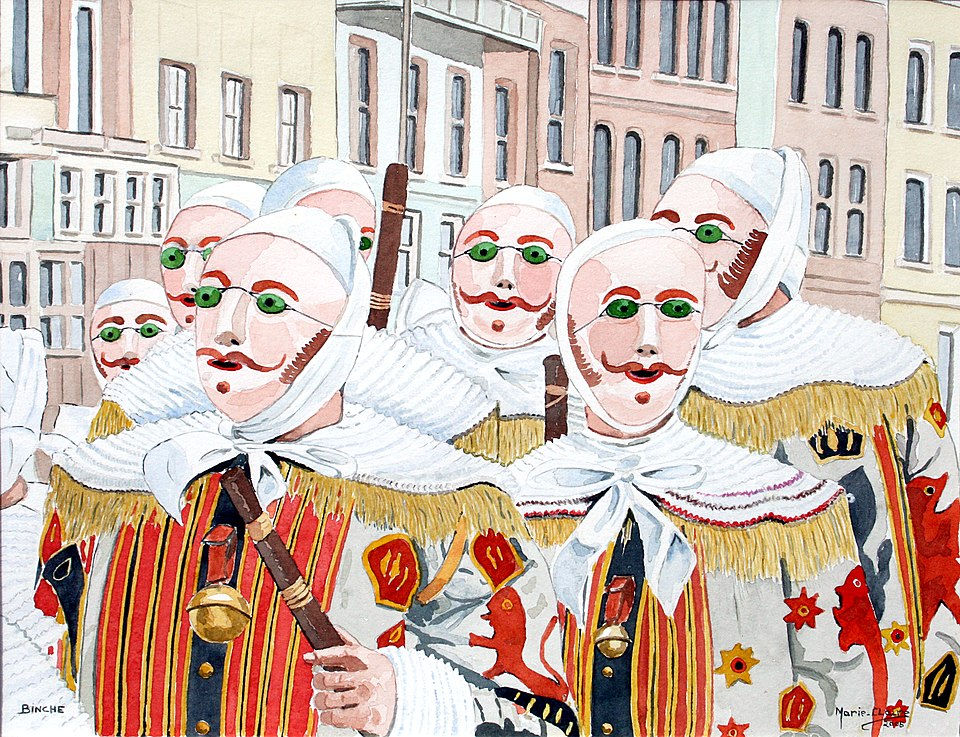

le carnaval de Binche
Le carnaval de Binche est un des plus anciens folklores de Belgique. Il a été reconnu en 2003, par l'UNESCO comme chef-d'œuvre du patrimoine oral et immatériel de l'humanité. Il est repris parmi les chefs-d’œuvre du Patrimoine oral et immatériel de la Fédération Wallonie-Bruxelles depuis 2004 et a été élevé au rang d’officier du Mérite wallon, le 23 février 2017. Les festivités se déroulent en deux parties : le carnaval proprement dit et l'avant-carnaval, temps des « soumonces ». Le carnaval commence 49 jours avant Pâques et les soumonces six semaines avant les trois « jours gras ». Le carnaval « de type binchois » se célèbre dans toute la Région du Centre, mais c'est à Binche qu'il demeure le plus codifié et le plus traditionnel. Les personnages principaux en sont les Gilles, qui dansent au son des 26 airs traditionnels du carnaval, sons qui sont joués par une batterie constituée de tambours (en général, on compte sept tamboureurs par batterie) et d'une grosse caisse (parfois deux dans d'autres villes). La batterie est accompagnée par un orchestre de cuivres (trompettes, bugles, trombones, tubas et sousaphones). Contrairement à leurs homologues des villages environnants, les Gilles binchois ne sortent que le Mardi-Gras et doivent respecter certaines coutumes (ne pas se déplacer sans l'accompagnement d'au minimum un joueur de tambour, ne pas s'asseoir en public, ne jamais être soûls, être obligatoirement Binchois d'origine, d'autres contraintes existent). Les autres personnages, qui forment les sociétés dites « de fantaisie », sont l'Arlequin (historiquement des enfants de l'Athénée royal de Binche), le Paysan (historiquement des enfants du Collège Notre-Dame de Bon secours), le Pierrot (historiquement des enfants du Petit Collège anciennement 'École des Frères') et le Marin, société recréée pour le carnaval 2018. D'autres sociétés de fantaisie ont participé aux cortèges du Mardi-Gras d'antan et ont disparu (Princes d'Orient, Mousquetaires, etc). Les premières traces écrites du carnaval remontent à 1394, les festivités correspondant alors au début du carême. Le port du masque est interdit sous le régime napoléonien, aussi voit-on apparaître pour la première fois dans les textes le Gille en 1795, personnage masqué se révoltant[1].
